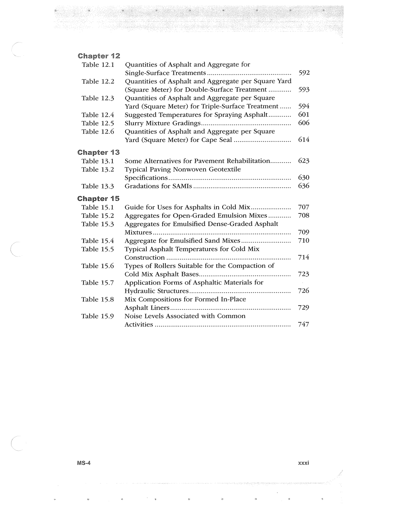

PDF page 33


Searchable transcription
Unproofread OCR · 236 detected words; mean OCR confidence 75.62. Check technical values, symbols and table columns against the scan.
Chapter 12 Table 12.1
Table 12.2 Table 12.3 Table 12.4
Table 12.5 Table 12.6
Chapter 13 Table 13.1 Table 13.2
Table 13.3
Chapter 15 Table 15.1 Table 15.2 Table 15.3
Table 15.4 Table 15.5
Table 15.6 Table 15.7 Table 15.8
Table 15.9
MS-4
Quantities of Asphalt and Aggregate for
Single-Surface Treatments 0.0.0.0... cece eee e tere eet 592
Quantities of Asphalt and Aggregate per Square Yard
(Square Meter) for Double-Surface Treatment ............ 593
Quantities of Asphalt and Aggregate per Square
Yard (Square Meter) for Triple-Surface Treatment ...... 594
Suggested Temperatures for Spraying Asphalt............ 601
Slurry Mixture Grading... cece ee eeseeeeeeeees 606
Quantities of Asphalt and Aggregate per Square
Yard (Square Meter) for Cape Seal ......... eee 614
Some Alternatives for Pavement Rehabilitation........... 623
Typical Paving Nonwoven Geotextile
Specifications .......e ce ececceeesceecseecseeeeseeeeeceeseeceseeeeeeeeeneees 630
Gradations for SAMIS .......cccccccsseceseeeeseeeeeereeeeseteneeneaees 636
Guide for Uses for Asphalts in Cold Mix... 707
Aggregates for Open-Graded Emulsion Mixes............ 708
Aggregates for Emulsified Dense-Graded Asphalt
MEXtULES 00 e eee eecece cee ce ee cee tener ncenaaaeaeaeeeneseneeeenenesenes 709
Aggregate for Emulsified Sand Mixes ..............cc ee 710
Typical Asphalt Temperatures for Cold Mix
COMStLUCTION 20... eee eeeeeeteeteneeseesceetesseettnaeecevsueseeneeeesaees 714
Types of Rollers Suitable for the Compaction of
Cold Mix Asphalt Bases........0...ccccccccceeeesseeeeeeeneeteeees 723
Application Forms of Asphaltic Materials for
Hydraulic Structures ........ccccccesceseeeseeeeeeeeeeeesnreseseenereaas 726
Mix Compositions for Formed In-Place
Asphalt Liners... ieee cee ceenceeeeensenrseneeeenseeeees 729
Noise Levels Associated with Common
ACTIVITIES ooo ee cece cece cence eneceneeeneeeenteseseteneeseaserseenanensess 747 Xxxi